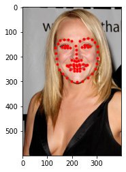
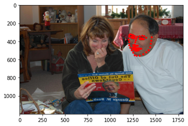

CS 194-26 Computer Vision & Computational Photography
Programming Project 3: Facial Keypoint Detection with Neural Networks
By Alek Petuskey
Overview
For the first part, I used the IMM Face Database for training an initial toy model for nose tip detection. Addtionally, I expanded on this model to detect 58
facial keypoints/landmarks using the same dataset. Finally, I extrapolated on facial detection by using ibug face in the wild dataset for training a facial keypoints
detector.
Part 1: Nose Tip Detection
In this section of the project I used 4 convolutional layers. I had varying channel and kernal sizes in each layer.
The channel sizes being 12, 16, 16, and 32 while the coresponding kernal sizes were 7x7, 5,x5 5x5, and 3x3. This was followed by 2 fully connected layers where
a ReLU was applied to the first. I initially set the learning rate to be 1e-3 but found 1e-4 to be better. Overall the program was good a picking nose point of straight on faces.
It struggled with finding faces that were pointed to the side. The person it struggled the most with was a bald male. This may be because most of the other people
in the dataset were not bald and the absense of hair may not of had enough people to trian with.
Average MSE Loss Training & Validation vs Iteration
Best and Worst Nose Detection
Part 2: Full Facial Keypoints Detection
I now expanded the CNN to detect 58 facial keypoints/landmarks using the same dataset as part 1.
Through trial and error I determined the best learning rate for my CNN to be .001.
Here is an a visual example of the 1st, 3rd, and 5th layers of my CNN
Dataloader
Average MSE Loss Training & Validation vs Iteration
Best and Worst Face Detection
Here are some of the examples of the better facial detections.
Here are some of the examples of the faces that struggled to be detected correctly. I noticed in all these photos there are some irregularitites from the normal face in the dataset.
For example the two men had facial hair which could mask key features. Additionally the womans hood may have thrown some features off.
Part 3: Train With Larger Dataset
CNN Model In this part, I used a predefined model Resnet18, which has the following architecture seen in the picture below.
I changed conv1's first input to be 1, since we use grayscale images
I also changed the number of output class to be 68 * 2, which are the x, y
coordinates of each facial point. I had the kernal size as 7x7, stride as 2x2, and padding at 3x3.
I came in 7th in the competition with an score of
7.398. Here is the losss curve of the first 20 epoches. In the competition I used around 46 epoches in
total.
Average MSE Loss Training & Validation vs Iteration
Dataloader
Results Test Set
 |
 | |
 | |
|---|
Results My Choices
Overall my results were fairly good. One example of Resnet18 struggling was with that bald man
making a funny face. The other two example sof my choosing did fairly well.